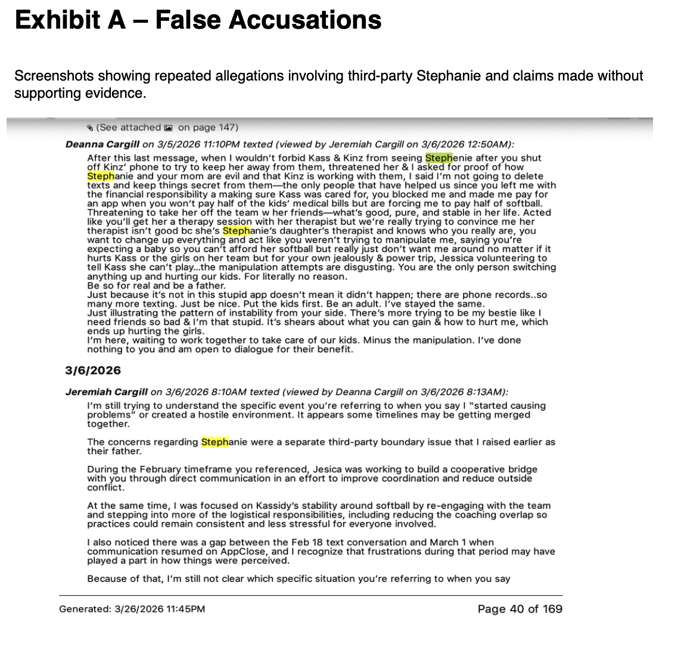
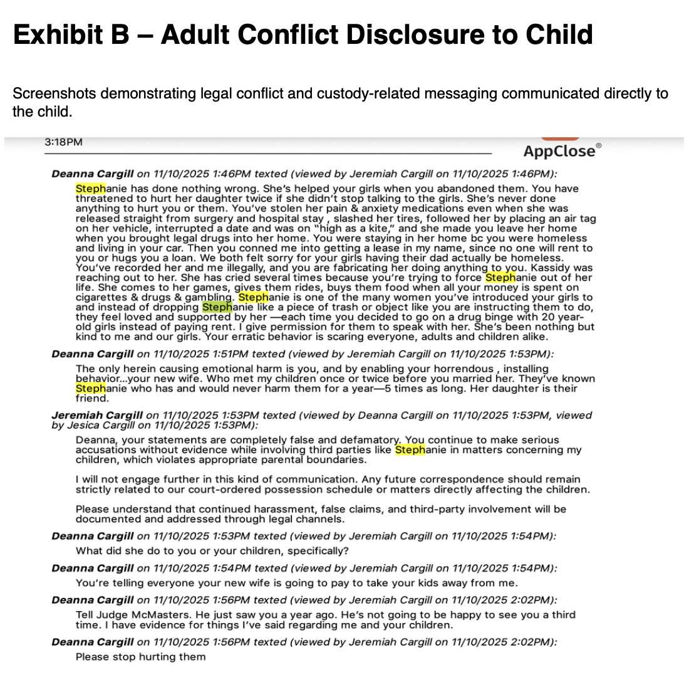
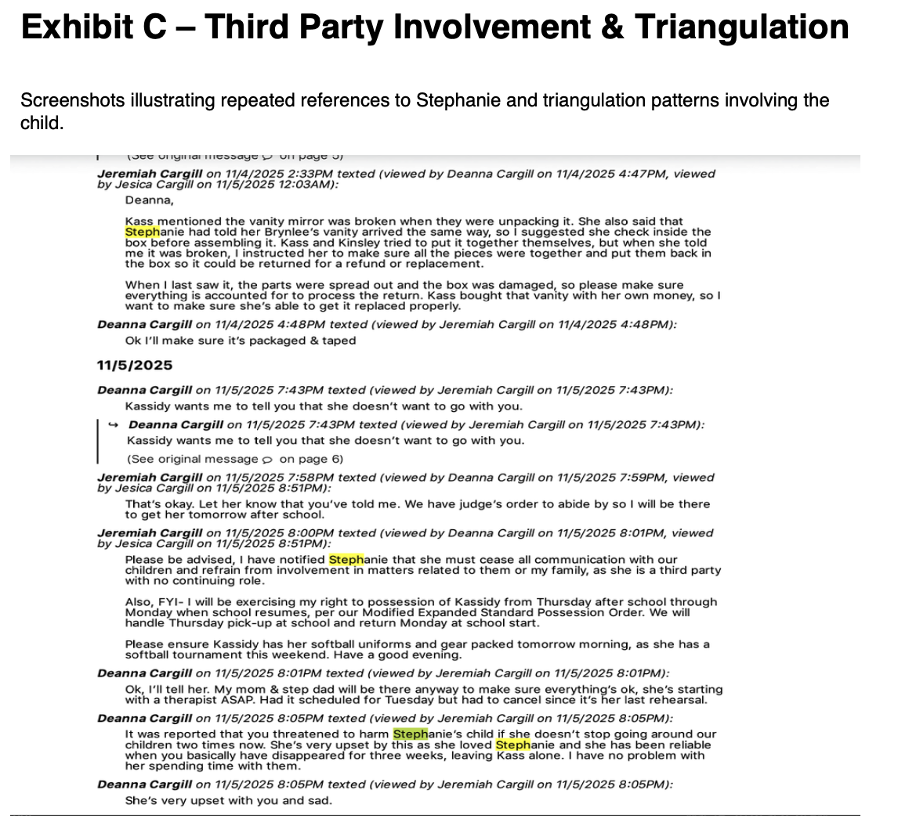
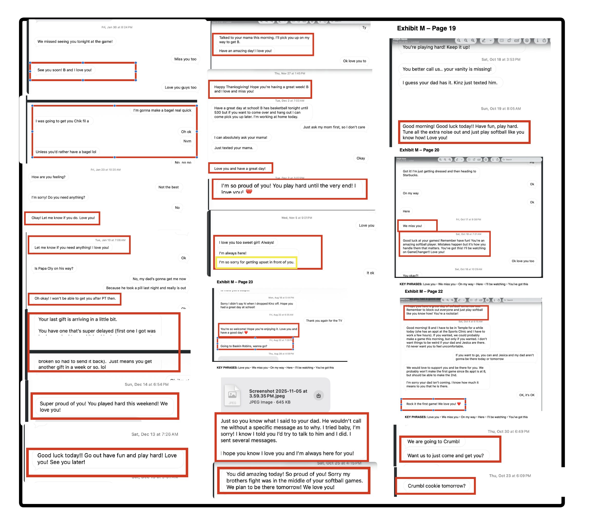

High-Level Summary
Stephanie appears in the broader narrative as an outside adult whose involvement became a point of tension in family dynamics, especially where boundaries, influence, and communication authority were concerned. Her presence is described less as a standalone issue and more as part of a larger conflict pattern involving alignment, access, and perceived interference during already-sensitive family moments.
Observed Role in Prior Narratives
Third-Party Influence
Referenced as a non-parent adult whose presence was seen as affecting decision flow, access, and alignment during family-related events.
Conflict Amplifier
Her involvement was associated with increased friction, especially when communication and decision-making were already strained.
Boundary Trigger
Her role was repeatedly tied to questions about who should be participating in parenting-space decisions and emotionally charged moments.
Relevant Narrative Themes
- Appeared in accounts involving youth supervision, event participation, and parent/child communication conflicts.
- Was framed as someone whose involvement could shift child alignment or complicate already fragile parent-child interactions.
- Functioned in the broader narrative as a symbol of outside influence entering family space at moments of instability.
- Was associated with concerns about overreach, triangulation, and competing authority.
Tagging System
Communication Exhibits
Purpose: These exhibits preserve example screenshots reflecting recurring references to Stephanie in conflict-related communication, including allegations, third-party involvement, and messaging that may place children near or inside adult disputes.
Use of exhibits: These should be read as pattern exhibits rather than isolated findings. The goal is to preserve language, context markers, and recurring references for structured review.
Exhibit A — False Accusations
Screenshots showing repeated allegations involving third-party Stephanie and claims made without supporting evidence.

Exhibit B — Adult Conflict Disclosure to Child
Screenshots demonstrating legal conflict and custody-related messaging communicated directly to the child.

Exhibit C — Third Party Involvement & Triangulation
Screenshots illustrating repeated references to Stephanie and triangulation patterns involving the child.

Composite Exhibit Overview
Composite image showing highlighted messages across multiple exchanges to illustrate repeated communication patterns and child-facing engagement themes.

Documentation note: These exhibits are best used as pattern-reference materials. Any final conclusion should be based on full chronology and surrounding context, but the repeated themes visible here are significant enough to preserve separately for review.
Analytical Notes
This page is intentionally written in a neutral, structured style. It does not attempt to make factual findings beyond the recurring themes already described in prior discussions. It is best used as a profile reference for relationship mapping, chronology review, and third-party influence analysis alongside the rest of the package.